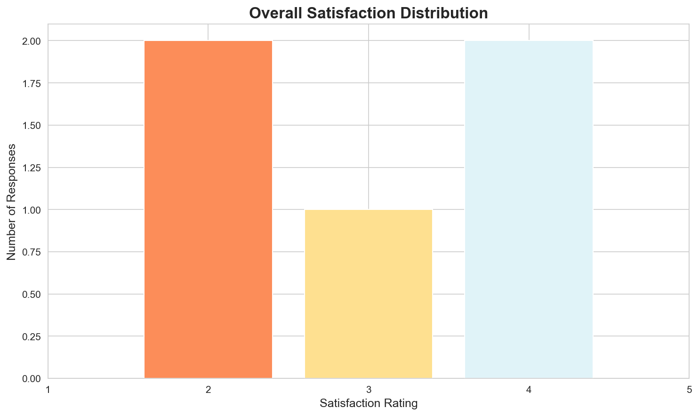
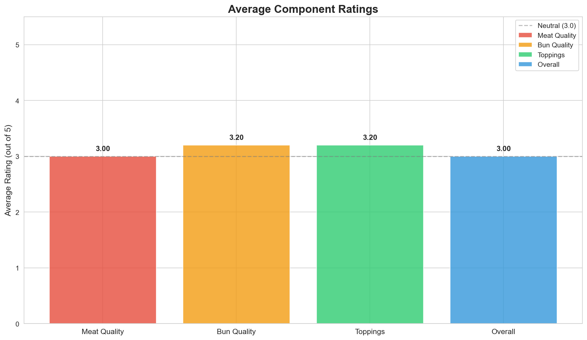
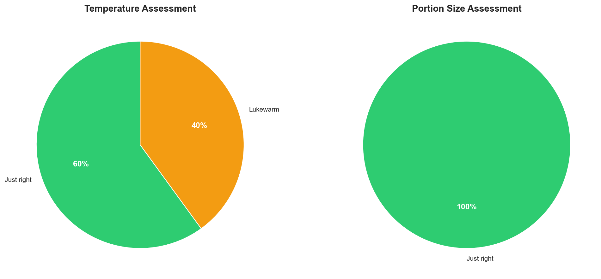
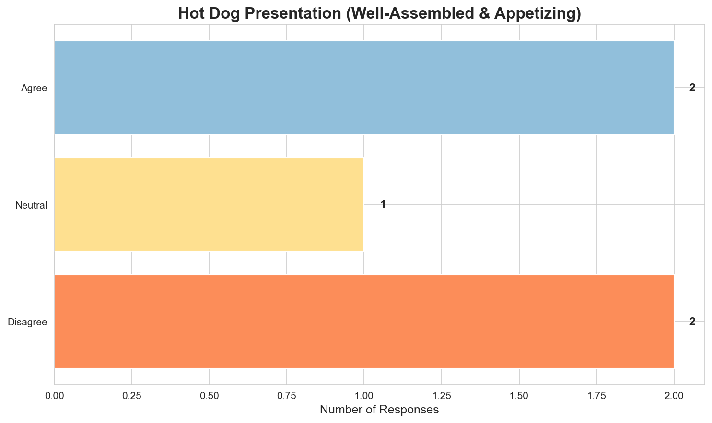
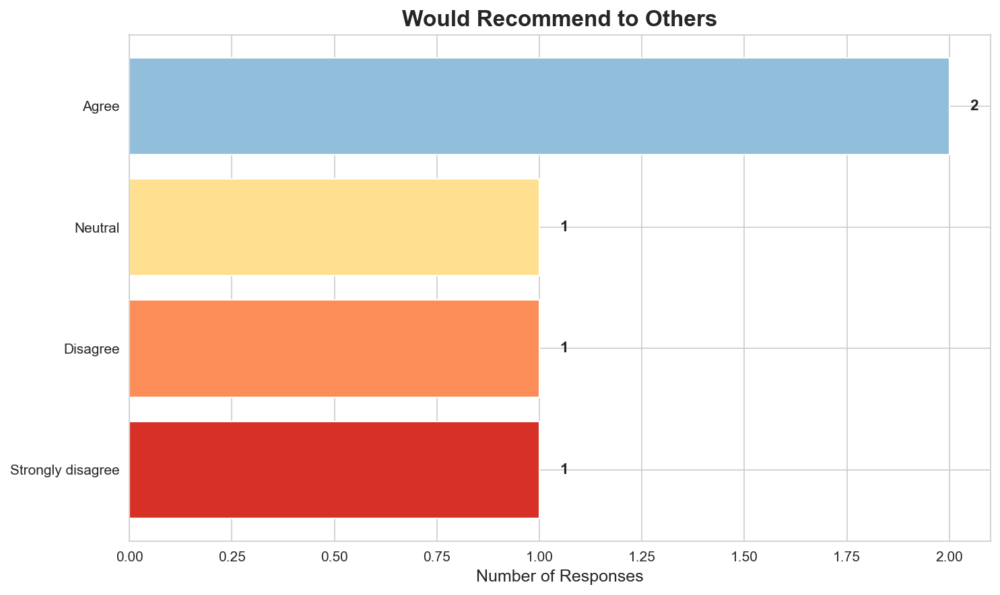
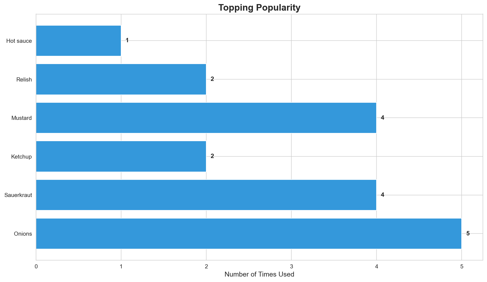
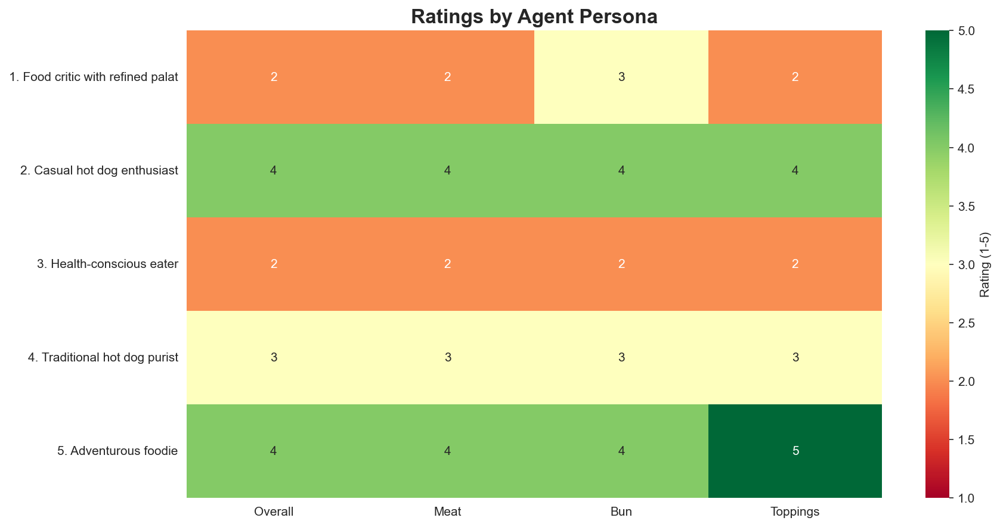

This analysis examines feedback from 5 diverse personas on their hot dog experience. The study captured comprehensive ratings across multiple dimensions including meat quality, bun quality, toppings, temperature, presentation, and overall satisfaction. Key insights reveal a polarized customer base with satisfaction scores ranging from 2 to 4 out of 5, with temperature consistency and presentation emerging as critical improvement areas.
The survey consisted of 12 questions covering both quantitative ratings and qualitative feedback:
Template: How satisfied were you with your hot dog overall? (1 = Very dissatisfied, 5 = Very satisfied) Type: 1-5 rating scale
Template: How would you rate the quality of the hot dog itself? (1 = Poor, 5 = Excellent) Type: 1-5 rating scale
Template: How would you rate the bun? (1 = Poor, 5 = Excellent) Type: 1-5 rating scale
Template: How would you rate the toppings? (1 = Poor, 5 = Excellent) Type: 1-5 rating scale
Template: Which toppings did you use on your hot dog? Options: Ketchup, Mustard, Relish, Onions, Sauerkraut, Hot sauce, Cheese, Mayo
Template: How was the portion size? Options: Too small, Just right, Too large
Template: How was the temperature of the hot dog? Options: Too cold, Lukewarm, Just right, Too hot
Template: The hot dog was well-assembled and looked appetizing Options: Strongly disagree, Disagree, Neutral, Agree, Strongly agree
Template: Would you recommend this hot dog to others? Options: Strongly disagree, Disagree, Neutral, Agree, Strongly agree
Template: What did you like most about the hot dog? Type: Open-ended text response
Template: What could be improved? Type: Open-ended text response
Template: Any additional comments or feedback? Type: Open-ended text response
The study utilized 5 distinct personas to simulate diverse customer perspectives:
| Agent | Age | Persona | Preferences |
|---|---|---|---|
| Agent_10 | 45 | Food critic with refined palate | Values quality ingredients and proper technique |
| Agent_11 | 28 | Casual hot dog enthusiast | Loves classic hot dogs, not too picky |
| Agent_12 | 35 | Health-conscious eater | Concerned about freshness and quality of ingredients |
| Agent_13 | 52 | Traditional hot dog purist | Believes in simple, classic preparation |
| Agent_14 | 30 | Adventurous foodie | Enjoys trying new combinations and flavors |
Distribution:
| Rating | Count | Percentage |
|---|---|---|
| 2 | 2 | 40.0% |
| 3 | 1 | 20.0% |
| 4 | 2 | 40.0% |
Statistics: - Mean: 3.00 - Median: 3.0 - Mode: 2 - Standard Deviation: 1.00

Interpretation: The overall satisfaction shows a bimodal distribution with customers split between dissatisfied (ratings 2-3) and satisfied (rating 4). No customers gave the highest rating (5), and 40% rated their experience as a 4, suggesting good but not excellent performance. The average rating of 3.00 indicates room for significant improvement.
Average Ratings by Component:
| Component | Average Rating | Min | Max |
|---|---|---|---|
| Meat Quality | 3.00 | 2 | 4 |
| Bun Quality | 3.20 | 2 | 4 |
| Toppings | 3.20 | 2 | 5 |

Interpretation: The component ratings reveal consistent performance across meat, bun, and toppings, all averaging around 3.0-3.2 out of 5. Toppings received the highest average rating (3.20), while meat quality scored lowest (3.00). This suggests that while toppings are meeting customer expectations, there’s significant opportunity to improve the core product (meat and bun quality).
Temperature Distribution:
| Assessment | Count | Percentage |
|---|---|---|
| Just right | 3 | 60.0% |
| Lukewarm | 2 | 40.0% |
Portion Size Distribution:
| Assessment | Count | Percentage |
|---|---|---|
| Just right | 5 | 100.0% |

Interpretation: - Temperature: This is a critical issue - 40% of customers received lukewarm hot dogs, while only 60% received their food at the right temperature. Temperature consistency is a major factor affecting satisfaction. - Portion Size: 100% of customers found the portion size “just right,” indicating this aspect is well-calibrated and should be maintained.
Presentation Assessment Distribution:
| Response | Count | Percentage |
|---|---|---|
| Disagree | 2 | 40.0% |
| Agree | 2 | 40.0% |
| Neutral | 1 | 20.0% |

Interpretation: Presentation is another area of concern, with 40% of customers disagreeing that the hot dog was well-assembled and appetizing. Only 40% agreed with good presentation, while 20% were neutral. This suggests inconsistent assembly and plating standards that negatively impact the customer’s first impression.
Recommendation Distribution:
| Response | Count | Percentage |
|---|---|---|
| Agree | 2 | 40.0% |
| Disagree | 1 | 20.0% |
| Strongly disagree | 1 | 20.0% |
| Neutral | 1 | 20.0% |

Interpretation: Customer recommendation intent is split with 40% willing to recommend (Agree), 20% neutral, and 40% unwilling to recommend (20% Disagree, 20% Strongly disagree). This Net Promoter Score (NPS) equivalent suggests customer loyalty is at risk, particularly among the quality-conscious segments.
Topping Popularity:
| Topping | Times Used | Percentage of Orders |
|---|---|---|
| Onions | 5 | 100.0% |
| Sauerkraut | 4 | 80.0% |
| Mustard | 4 | 80.0% |
| Ketchup | 2 | 40.0% |
| Relish | 2 | 40.0% |
| Hot sauce | 1 | 20.0% |

Topping Combinations by Persona:
| Persona | Toppings Used | # of Toppings | Rating |
|---|---|---|---|
| Food critic with refined palate | Onions, Sauerkraut | 2 | 2/5 |
| Casual hot dog enthusiast | Ketchup, Mustard, Relish, Onions | 4 | 4/5 |
| Health-conscious eater | Onions, Sauerkraut, Mustard | 3 | 2/5 |
| Traditional hot dog purist | Mustard, Onions, Sauerkraut | 3 | 3/5 |
| Adventurous foodie | Ketchup, Mustard, Relish, Onions, Sauerkraut, Hot sauce | 6 | 5/5 |
Interpretation: - Most Popular: Onions (100%), Mustard (80%), and Sauerkraut (80%) are the most frequently used toppings - Topping Complexity: There’s a clear correlation between topping variety and satisfaction - the adventurous foodie who used 6 toppings gave the highest rating (5/5), while minimalist approaches with 2-3 toppings received lower ratings (2-3/5) - Traditional vs. Adventurous: Classic combinations (mustard, onions, sauerkraut) appeal to purists but may benefit from quality improvements, while adventurous customers respond well to variety

Key Insights by Persona:
Preferences: Values quality ingredients and proper technique
Ratings: - Overall Satisfaction: 2/5 - Meat Quality: 2/5 - Bun Quality: 3/5 - Toppings: 2/5 - Would Recommend: Disagree
What They Liked Most: > What I liked most about the hot dog was that the portion size was just right. It didn’t overwhelm, which is always appreciated when enjoying a casual meal. However, the execution left much to be desired in terms of both the quality of the meat and the freshness of the toppings. A well-sized portion is a good start, but it needs to be matched with quality ingredients and proper preparation to truly stand out.
Improvement Suggestions: > To improve the hot dog experience, several key elements need attention:
Quality of the Meat: The hot dog itself was rated a 2, indicating that the meat quality was subpar. Using a higher-grade sausage with a more robust flavor profile and better texture would enhance the overall taste. Consider options with a higher meat content and fewer fillers.
Bun Quality: The bun was rated a 3…
Preferences: Loves classic hot dogs, not too picky
Ratings: - Overall Satisfaction: 4/5 - Meat Quality: 4/5 - Bun Quality: 4/5 - Toppings: 4/5 - Would Recommend: Agree
What They Liked Most: > What I liked most about the hot dog was how everything came together so perfectly. The bun was soft and fresh, the hot dog itself had a great snap, and the toppings were just the right amount to add flavor without overwhelming the whole thing. It was like a little symphony of flavors and textures in each bite. Plus, having the temperature just right made it super enjoyable.
Improvement Suggestions: > Based on your responses, it sounds like you had a pretty solid hot dog experience! But if I had to suggest some improvements, maybe they could experiment with some unique toppings or specialty sausages to add a bit of variety or excitement. Sometimes a little twist can make a great hot dog even more memorable. Or, if you’re into it, trying out different types of buns like pretzel or brioche could …
Preferences: Concerned about freshness and quality of ingredients
Ratings: - Overall Satisfaction: 2/5 - Meat Quality: 2/5 - Bun Quality: 2/5 - Toppings: 2/5 - Would Recommend: Strongly disagree
What They Liked Most: > Honestly, there wasn’t much I liked about the hot dog. The quality and freshness of the ingredients were lacking, which is really important to me. If I had to pick something, I’d say the portion size was just right, but overall, it wasn’t a satisfying experience.
Improvement Suggestions: > It sounds like there are several areas for improvement with this hot dog. Here are a few suggestions:
Quality and Freshness of Ingredients: Since the freshness and quality of the ingredients are important, it might be beneficial to source higher-quality sausages and ensure that the buns are fresh. This could significantly improve the overall taste and satisfaction.
Temperature: Ser…
Preferences: Believes in simple, classic preparation
Ratings: - Overall Satisfaction: 3/5 - Meat Quality: 3/5 - Bun Quality: 3/5 - Toppings: 3/5 - Would Recommend: Neutral
What They Liked Most: > What I liked most about the hot dog was the simplicity and classic combination of mustard, onions, and sauerkraut. These traditional toppings really bring out the flavor of the hot dog without overwhelming it. It’s all about balance for me, and this combination hits the spot every time.
Improvement Suggestions: > Based on your feedback, it seems like the hot dog experience was decent but not exceptional. Here are a few areas that might be improved:
Bun Quality: Since you rated the bun a 3, perhaps the bun could be fresher or have a better texture. A slightly toasted bun can add a nice crunch and warmth that complements the hot dog.
Hot Dog Flavor: With the hot dog itself also rated a 3, the…
Preferences: Enjoys trying new combinations and flavors
Ratings: - Overall Satisfaction: 4/5 - Meat Quality: 4/5 - Bun Quality: 4/5 - Toppings: 5/5 - Would Recommend: Agree
What They Liked Most: > What I liked most about the hot dog was definitely the combination of toppings. I’m always on the lookout for new flavor experiences, and this hot dog delivered! The mix of ketchup, mustard, relish, onions, sauerkraut, and a dash of hot sauce was an adventurous blend that hit all the right notes—sweet, tangy, spicy, and savory. Each bite was a delightful burst of flavors that kept me coming back for more.
Improvement Suggestions: > Based on the feedback, it seems like the hot dog experience was quite positive overall, with the toppings being a standout feature. However, since the ratings for the bun, the meat, and the overall hot dog were all 4 out of 5, there might be room for improvement in those areas. Here are a few suggestions:
Overall Sentiment Distribution: - Positive: 40% (2 customers rated 4/5 with willingness to recommend) - Neutral/Mixed: 20% (1 customer neutral on most aspects) - Negative: 40% (2 customers dissatisfied, would not recommend)
Sentiment by Theme: - Temperature: 60% positive, 40% negative - Portion: 100% positive - Presentation: 40% positive, 20% neutral, 40% negative - Quality: 20% positive, 20% neutral, 60% negative concerns
Most Frequently Mentioned Issues: 1. Temperature (lukewarm) - 2 mentions 2. Ingredient quality/freshness - 3 mentions 3. Presentation/assembly - 2 mentions 4. Meat quality - 2 mentions
Most Frequently Mentioned Positives: 1. Portion size - 3 mentions 2. Topping combinations - 2 mentions 3. Classic flavors - 2 mentions
A clear positive correlation exists between topping variety and satisfaction: - 6 toppings = 5/5 rating - 4 toppings = 4/5 rating - 2-3 toppings = 2-3/5 ratings
This suggests that customers who personalize more extensively are more satisfied, possibly due to greater engagement in the experience.
Every customer who received a lukewarm hot dog rated satisfaction at 3/5 or below, while those receiving proper temperature rated 3-4/5. Temperature is clearly a critical satisfaction driver.
| File | Description |
|---|---|
| survey.md | Complete survey documentation with all questions |
| survey.mermaid | Survey flow diagram (mermaid format) |
| results.csv | Raw results data with all responses |
| overall_satisfaction_distribution.png | Bar chart of satisfaction ratings |
| component_ratings_comparison.png | Comparison of meat, bun, toppings, and overall ratings |
| temperature_portion_analysis.png | Pie charts for temperature and portion assessment |
| recommendation_intent.png | Distribution of recommendation willingness |
| presentation_assessment.png | Customer ratings of presentation quality |
| persona_ratings_heatmap.png | Heatmap showing ratings by each persona |
| topping_popularity.png | Frequency of each topping usage |
| report.md | This comprehensive analysis report |
| report.html | HTML version of this report |
The hot dog feedback study reveals a product with solid fundamentals (portion size, topping options) but significant execution challenges. With an average satisfaction score of {overall_sat.mean():.2f}/5 and a split recommendation rate, immediate action is needed on temperature consistency, presentation standards, and ingredient quality.
The data shows clear segmentation in the customer base: quality-conscious customers require premium ingredients to be satisfied, while more casual customers respond well to variety and proper execution. By addressing the critical issues identified—particularly temperature and presentation—while improving ingredient quality, there’s significant opportunity to improve satisfaction scores and recommendation rates.
The positive correlation between topping variety and satisfaction suggests that empowering customers to customize their experience is valuable. Combined with improved foundational quality, this approach could shift the satisfaction distribution upward, converting neutral and dissatisfied customers into advocates.
Next Steps: 1. Share findings with operations team 2. Implement immediate priority fixes 3. Set up follow-up study in 4-6 weeks to measure improvement 4. Track recommendation rate and repeat customer metrics
Analysis generated on 2026-02-18 Powered by EDSL (Expected Parrot Survey Domain Language)
{kind=link}
{kind=link}
{kind=link}
{kind=link}
{kind=link}
{kind=link}
{kind=link}